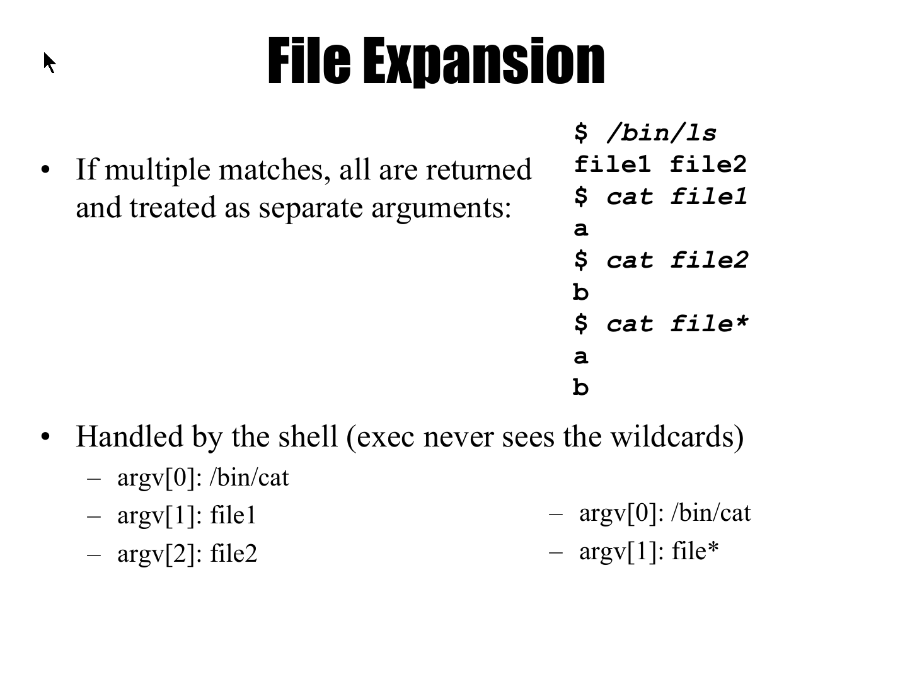

Shell是Linux下的脚本解释器，而Bash是现在最常用的一种Shell
Shell综述
所谓的Shell，就是运行在终端中的文本互动程序（脚本解释器）。Shell分析你的文本输入，然后把文本转换成相应的计算机动作。
如下：
free -h（free命令用于输出系统内存使用情况）
Shell程序会通过空格和其他特殊符号，区分出文本的不同部分。第一个部分是命令名。剩下的部分是选项和参数。在这个例子中，Shell会进一步分析第二个部分，发现这一部分的开头是-字符，从而知道它是一个选项。
shell命令
Shell命令可以分为如下三类：
1) Shell内建函数（built-in function） 2) 可执行文件（executable file） 3) 别名（alias）
Shell的内建函数是Shell自带的功能
可执行文件是保存在Shell之外的文件，提供了额外的功能。Shell必须在系统中找到对应命令名的可执行文件，才能正确执行。我们可以用绝对路径来告诉Shell可执行文件所在的位置。如果用户只是给出了命令名，而没有给出准确的位置，那么Shell必须自行搜索一些特殊的位置，也就是所谓的默认路径。Shell会执行第一个名字和命令名相同的可执行文件。这就相当于，Shell帮我们自动补齐了可执行文件的位置信息。我们可以通过which命令，来确定命令名对应的是哪个可执行文件：
which date
别名是给某个命令一个简称，以后在Shell中就可以通过这个简称来调用对应的命令。在Shell中，我们可以用alias来定义别名：
alias freak="free -h"
在Shell中，我们可以通过type命令来了解命令的类型。如果一个命令是可执行文件，那么type将打印出文件的路径。
type date #打印路径
type pwd #内建函数
总的来说，Shell就是根据空格和其他特殊符号，来让电脑理解并执行用户要求的动作。到了后面，我们还将看到Shell中其他的特殊符号。
Shell的选择
Shell是文本解释器程序的统称，所以包括了不止一种Shell。常见的Shell有sh、bash、ksh、rsh、csh等。常见的Linux系统，安装了sh和bash两个Shell解释器。sh的全名是Bourne Shell。名字中的玻恩就是这个Shell的作者。而bash的全名是Bourne Again Shell。最开始在Unix系统中流行的是sh，而bash作为sh的改进版本，提供了更加丰富的功能。一般来说，都推荐使用bash作为默认的Shell。Linux系统中广泛安装sh，都是出于兼容历史程序的目的。
我们可以通过下面的命令来查看当前的Shell类型：
echo $SHELL
echo用于在终端打印出文本。而$是一个新的Shell特殊符号。它提示Shell，后面跟随的不是一般的文本，而是用于存储文本的变量。Shell会根据变量名找到真正的文本，替换到变量所在的位置。SHELL变量存储了当前使用的Shell的信息.
你可以在bash中用sh命令启动sh，并可以用exit命令从中退出。
命令的选项和参数
我们已经看到，一行命令里还可以包含着选项和参数。总的来说，选项用于控制命令的行为，而参数说明了命令的作用对象。比如说：
uname -m(uname命令显示系统信息)
在上面的命令中，选项-m影响了命令uname的行为，导致uname输出了CPU型号。如果不是该选项的影响，uname输出的将是"Linux"。我们不妨把每个命令看做多功能的瑞士军刀，而选项让命令在不同的功能间切换。由一个"-"引领一个英文字母，这成为短选项。多个短选项的字母可以合在一起，跟在同一个"-"后面。比如，下面的两个命令就等价：
uname -m -r
uname -mr
此外还有一种长选项，是用"--"引领一整个英文单词，比如：
date --version
上面的命令将输出date程序的版本信息。
如果说选项控制了瑞士军刀的行为，那么参数就提供了瑞士军刀发挥用场的原材料。就拿echo这个命令来说，它能把字符打印到终端。它选择打印的对象，正是它的参数：
echo hello
有的时候，选项也会携带参数，以便来说明选项行为的原材料。比如：
sudo date --set="1999-01-01 08:00:00"
选项"--set"用于设置时间，用等号连接的，就是它的参数。date会把日期设置成这一变量所代表的日期。如果用短选项，那么就要用空格取代等号了：
sudo date -s "1999-01-01 08:00:00"
值得注意的是，Shell对空格敏感。当一整个参数信息中包含了空格时，我们需要用引号把参数包裹起来，以便Shell能识别出这是一个整体。
所谓的选项和参数是提供给命令的附加信息。因此，命令最终会拿这些字符串做什么，是由命令自己决定的。因此，有时会发现一些特异的选项或参数用法。这个时候，你就要从文档中寻找答案。
变量
正如我们在C语言中看到的，变量是内存中的一块儿空间，可以用于存储数据。我们可以通过变量名来引用内存中保存的数据 Bash中也有变量，但Bash的变量只能存储文本。
1) 变量赋值
Bash和C类似，同样用=来表示赋值。比如：
var=World
就是把文本World存入名为var的变量，即赋值。根据Bash的语法，赋值符号=的前后不留空格
如果文本中包含空格，那么你可以用单引号或双引号来包裹文本。比如：
var='abc bcd'
或者：
var="abc bcd"
在Bash中，我们可以把一个命令输出的文本直接赋予给一个变量：
now=`date`
借助``符号，date命令的输出存入了变量now。
我们还可以把一个变量中的数据赋值给另一个变量：
another=$var
2) 引用变量
我们可以用$var的方式来引用变量。在Bash中，所谓的引用变量就是把变量翻译成变量中存储的文本。比如：
var=World
echo $var
就会打印出World，即变量中保存的文本。
在Bash中，你还可以在一段文本中嵌入变量。Bash也会把变量替换成变量中保存的文本。比如：
echo Hello$var
文本将打印出HelloWorld。
为了避免变量名和尾随的普通文本混淆，我们也可以换用${}的方式来标识变量。比如说：
echo $varIsGood
由于Bash中并没有varIsGood这个变量，所以Bash将打印空白行。但如果将命令改为：
echo ${var}IsGood
Bash通过${}识别出变量var，并把它替换成数据。最终echo命令打印出WorldIsGood。
在Bash中，为了把一段包含空格的文本当做单一参数，就需要用到单引号或双引号。你可以在双引号中使用变量。比如：
echo "Hello $var"
将打印Hello World。与此相对，Bash会忽视单引号中的变量引用，所以单引号中的变量名只会被当做普通文本，比如：
echo 'Hello $var'
将打印Hello $var。
数学运算
在Bash中，数字和运算符都被当做普通文本。所以你无法像C语言一样便捷地进行数学运算。比如执行下面的命令：
result=1+2
echo $result
Bash并不会进行任何运算。它只会打印文本“1+2”。
在Bash中，你可以通过$(())语法来进行数值运算。在双括号中你可以放入整数的加减乘除表达式。Bash会对其中的内容进行数值运算。比如
echo $((2 + (5*2)))
将打印运算结果12。此外，在$(())中，你也可以使用变量。比如：
var=1
echo $(($var + (5*2)))
将打印运算结果11。
你可以用Bash实现多种整数运算：
加法：$(( 1 + 6 ))。结果为7。
减法：$(( 5 – 3 ))。结果为2。
乘法：$(( 2*2 ))。结果为4。
除法：$(( 9/3 ))。结果为3。
求余：$(( 5%3 ))。结果为2。
乘方：$(( 2**3 ))。结果为8。
现在，你就可以把数学运算结果存入变量：
result=$(( 1 + 2 ))
返回代码
在Linux中，每个可执行程序会有一个整数的返回代码。按照Linux惯例，当程序正常运行完毕并返回时，将返回整数0。在Shell中，我们运行了程序后，可以通过$?变量来获知返回码。比如：
gcc foo.c
./a.out
echo $?
如果一个程序运行异常，那么这个程序将返回非0的返回代码。比如删除一个不存在的文件：
rm none_exist.file
echo $?
在Linux中，可以在一个行命令中执行多个程序。比如：
touch demo.file; ls;
在执行多个程序时，我们可以让后一个程序的运行参考前一个程序的返回代码。比如说，只有前一个程序返回成功代码0，才让后一个程序运行：
rm demo.file && echo "rm succeed"
如果rm命令顺利运行，那么第二个echo命令将执行。
还有一种情况，是等到前一个程序失败了，才运行后一个程序，比如：
rm demo.file || echo "rm fail"
如果rm命令失败，第二个echo命令才会执行。
Bash脚本
你还可以把多行的Bash命令写入一个文件，成为所谓的Bash脚本。当Bash脚本执行时，Shell将逐行执行脚本中的命令。编写Bash脚本，是我们开始实现Bash代码复用的第一步。
1) 脚本的例子
用文本编辑器编写一个Bash脚本hello_world.bash：
#!/bin/bash
echo Hello
echo World
脚本的第一行说明了该脚本使用的Shell，即/bin/bash路径的Bash程序。脚本正文是两行echo命令。运行脚本的方式和运行可执行程序的方式类似，都是：
./hello_world.bash
我们看一个简单的Bash脚本hw_info.bash，它将计算机的信息存入到名为log的文件中：
#!/bin/bash
echo "Information of Vamei's computer:" > log
lscpu >> log # lscpu命令输出cpu架构的信息
uname –a >> log #uname输出操作系统相关信息
free –h >> log #free输出内存使用情况
2) 脚本参数
和可执行程序类似，Bash脚本运行时，也可以携带参数。这些参数可以在Bash脚本中以变量的形式使用。比如test_arg.bash:
#!/bin/bash
echo $0
echo $1
echo $2
在Bash中，你可以用$0、$1、$2……的方式，来获得Bash脚本运行时的参数。我们用下面的方式运行Bash脚本：
./test_arg.bash hello world
$0是命令的第一部分，也就是./testarg.bash。
$1代表了参数hello，而$2代表了参数world。因此，上面程序将打印：
./test_arg.bash
hello
world
如果变更参数，同一段脚本将有不同的行为。这大大提高了Bash脚本的灵活性。上面的hw_info.bash脚本中，我们把输出文件名写死成log。我们也可以修改脚本，用参数作为输出文件的文件名：
#!/bin/bash
echo "Information of Vamei's computer:" > $1
lscpu >> $1
uname –a >> $1
free –h >> $1
借助参数，我们就可以自由地设置输出文件的名字：
./hw_info.bash output.file
3) 脚本的返回代码
和可执行程序类似，脚本也可以有返回代码。还是按照惯例，脚本正常退出时返回代码0。在脚本的末尾，我们可以用exit命令来设置脚本的返回代码。我们修改hello_world.bash：
#!/bin/bash
echo Hello
echo World
exit 0
其实在脚本的末尾加一句exit 0并不必要。一个脚本如果正常运行完最后一句，会自动的返回代码0。在脚本运行后，我们可以通过$?变量查询脚本的返回代码：
./hello_world.bash
echo $?
如果在脚本中部出现exit命令，脚本会直接在这一行停止，并返回该exit命令给出的返回代码。比如下面的demo_exit.bash:
#!/bin/bash
echo hello
exit 1
echo world
函数
在定义函数时，我们需要花括号来标识函数中包括的部分：
#!/bin/bash
function my_info (){
lscpu >> log
uname –a >> log
free –h >> log
}
my_info
脚本定义了函数my_info。关键字function和花括号都提示了该部分是函数定义。因此，function关键字并不是必须的。上面的脚本等效于：
#!/bin/bash
my_info (){
lscpu >> log
uname –a >> log
free –h >> log
}
my_info
脚本的最后一行是在调用函数。
像调用脚本文件一样，函数调用时还可以携带参数。在函数内部，我们同样可以用$1、$2这种形式的变量来使用参数：
#!/bin/bash
function my_info (){
lscpu >> $1
uname –a >> $1
free –h >> $1
}
my_info output.file
my_info another_output.file
跨脚本调用
在Bash中使用source命令，可以实现函数的跨脚本调用。命令source的作用是在同一个进程中执行另一个文件中的Bash脚本。比如说，有两个脚本，my_info.bash和app.bash。脚本my_info.bash中的内容是：
#!/bin/bash
function my_info (){
lscpu >> $1
uname –a >> $1
free –h >> $1
}
脚本app.bash中的内容是：
#!/bin/bash
source my_info.bash #或者是 . my_info.bash
my_info output.file
运行app.bash时，执行到source命令那一行时，就会执行my_info.bash脚本。在app.bash的后续部分，就可以使用my_info.bash中的my_info函数。
逻辑判断
Bash除了可以进行数值运算，还可以进行逻辑判断。逻辑判断是决定某个说法的真假。在Bash中，我们可以用test命令来进行逻辑判断：
test 3 -gt 2; echo $?
命令test后面跟有一个判断表达式，其中的-gt表示大于，即greater than。由于3大于2这一表达式为真，所以命令的返回代码将是0。如果表达式为False，那么命令的返回代码是1
test 3 -lt 2; echo $?
表达式中的-lt表示小于，即less than。
数值大小和相等关系的判断，是最常见的逻辑判断。除了上面的大于和小于判断，我们还可以进行以下的数值判断：
等于： test 3 -eq 3; echo $?
不等于： test 3 -ne 1; echo $?
大于等于： test 5 -ge 2; echo $?
小于等于： test 3 -le 1; echo $?
Bash中最常见的数据形式是文本，因此也提供了很多关于文本的判断：
文本相同: test abc = abx; echo $?
文本不同： test abc != abx; echo $?
按照词典顺序，一个文本在另一个文本之前： test apple > tea; echo $?
按照词典顺序，一个文本在另一个文本之后： test apple < tea; echo $?
Bash还可以对文件的状态进行逻辑判断：
检查一个文件是否存在： test –e a.out; echo $?
检查一个文件是否存在，而且是普通文件： test –f file.txt; echo $?
检查一个文件是否存在，而且是目录文件： test –d myfiles; echo $?
检查一个文件是否存在，而且是软连接： test –L a.out; echo $?
检查一个文件是否可读： test –r file.txt; echo $?
检查一个文件是否可写： test –w file.txt; echo $?
检查一个文件是否可执行： test –x file.txt; echo $?
在做逻辑判断时，可以把多个逻辑判断条件用“与、或、非”的关系组合起来，形成复合的逻辑判断。
! expression
expression1 –a expression2
expression1 –o expression2
选择结构
选择结构可以让程序根据条件决定执行哪一部分的指令。如下面的demo_if.bash脚本：
#!/bin/bash
var = `whoami`
if [ $var = "root" ]
then
echo "You are root"
echo "You are my God."
fi
我们还可以通过if...then...else...结构，让Bash脚本从两个代码块中选择一个执行。
#!/bin/bash
filename=$1
if [ -e $filename ]
then
echo "$filename exists"
else
echo "$filename NOT exists"
fi
echo "The End"
if后面的-e $filename作为判断条件。如果条件成立，即文件存在，那么执行then部分的代码块。如果文件不存在，那么脚本将执行else语句中的echo命令。末尾的fi结束整个语法结构。脚本继续以顺序的方式执行剩余内容。
在then代码块和else代码块内部，我们可以继续嵌套选择结构，从而实现更多个代码块的选择执行。比如脚本demo_nest.bash:
#!/bin/bash
var=`whoami`
echo "You are $var"
if [ $var = "root" ]
then
echo "You are my God."
else
if [ $var = "vamei" ]
then
echo "You are a happy user."
else
echo "You are the Others."
fi
fi
在Bash下，我们还可以用case语法来实现多程序块的选择执行。比如下面的脚本demo_case.bash：
#!/bin/bash
var=`whoami`
echo "You are $var"
case $var in
root)
echo "You are God."
;;
vamei)
echo "You are a happy user."
;;
*)
echo "You are the Others."
;;
esac
这个脚本和上面的demo_nest.bash功能完全相同。可以看到case结构与if结构的区别。关键字case后面不再是逻辑表达式，而是一个作为条件的文本。后面的代码块分为三个部分，都以文本标签)的形式开始，以;;结束。在case结构运行时，会逐个检查文本标签。当条件文本和文本标签可以对应上时，Bash就会执行隶属于该文本标签的代码块。如果是用户vamei执行该Bash脚本，那么条件文本和vamei标签对应上，脚本就会打印：
You are a happy user.
文本标签除了是一串具体的文本，还可以包含文本通配符。结构case中常用的通配符包括：
通配符 含义 文本标签例子 通过的条件文本
* 任意文本 *) Xyz, 123, …
? 任意一个字符 a?c) abc, axc, …
[] 范围内一个字符 [1-5][b-d]) 2b, 3d, …
上面的程序中最后一个文本标签是通配符*，即表示任意条件文本都可以触发此段代码块的运行。当然，前提是前面的几个文本标签都没有“截胡”。
bash常见的通配符如下：
*：星号用于匹配任意数量的字符（包括零个字符）。例如，*.txt 匹配当前目录下所有以 .txt 结尾的文件。
?：问号用于匹配任意单个字符。例如，file?.txt 匹配 file1.txt、file2.txt 等，但不匹配 file12.txt。
[]：方括号用于匹配括号内列出的任意一个字符。例如，[abc].txt 匹配 a.txt、b.txt 或 c.txt，但不匹配 d.txt。方括号内可以使用连字符 - 表示范围，例如 [a-z].txt 匹配任何一个小写字母开头的 .txt 文件。
[^]：脱字符 ^ 用在方括号内时，表示匹配不在括号内列出的任意一个字符。例如，[^abc].txt 匹配除了 a.txt、b.txt、c.txt 之外的所有 .txt 文件。
{}：花括号用于列出多个选项，其中任意一个都可以匹配。例如，{file1,file2}.txt 匹配 file1.txt 或 file2.txt。
~：波浪号用于匹配当前用户的主目录。在路径名中使用时，它会扩展为用户的主目录路径。
**：双星号是 Bash 4.0 及以上版本中的一个特性，用于匹配任意数量的目录层级。例如，**/*.txt 会递归地匹配当前目录及所有子目录中的所有 .txt 文件。

也就是说，通配符的拓展是在shell层面执行的
循环结构
在while语法中，Bash会循环执行隶属于while的代码块，直到逻辑表达式不成立。比如下面的demo_while.bash：
#!/bin/bash
now=`date +'%Y%m%d%H%M'`
deadline=`date --date='1 hour' +'%Y%m%d%H%M'`
while [ $now -lt $deadline ]
do
date
echo "not yet"
sleep 10
now=`date +'%Y%m%d%H%M'`
done
echo "now, deadline reached"
如果while的条件始终是真，那么循环会一直进行下去。下面的程序就是以无限循环的形式，不断播报时间：
#!/bin/bash
while true
do
date
sleep 1
done
语法while的终止条件是一个逻辑判断。如果在循环过程中改变逻辑判断的内容，那么我们很难在程序执行之前预判循环进行的次数。正如我们之前在demo_while.bash中看到的，我们在循环进行过程中改变着作为条件的逻辑表达式，不断地更新参与逻辑判断的当前时间。 与while语法对应的是for循环。这种语法会在循环进行前确定好循环进行的次数，比如demo_for.bash：
#!/bin/bash
for var in `ls log*`
do
rm $var
done
在这个例子中，命令ls log*将返回所有以log开头的文件名。这些文件名之间由空格分隔。循环进行时，Bash会依次取出一个文件名，赋值给变量var，并执行do和done之间隶属于for结构的程序块。
在for语法中，我们也可以使用自己构建的一个由空格分隔的文本序列。由空格区分出来的每个子文本会在循环中赋值给变量。比如：
#!/bin/bash
for user in vamei anna yutian
do
echo $user
done
此外，for循环还可以和seq命令配合使用。命令seq用于生成一个等差的整数序列。命令后面可以跟3个参数，第一个参数表示整数序列的开始数字，第二个参数表示每次增加多少，最后一个参数表示序列的终点（包括这个终点）。因此，下面命令：
seq 1 2 10
将返回：
1 3 5 7 9
可以看到，seq返回的也是由空格分隔开的文本。因此，seq的返回结果也可用于for循环。
结合for循环和seq命令，我们可以解一些有趣的数学问题。比如高斯求和，是要计算从1到100的所有整数的和。我们可以用Bash解决：
#!/bin/bash
total=0
for number in `seq 1 1 100`
do
total=$(( $total + $number ))
done
echo $total
这个问题还可以用do while循环来求解：
#!/bin/bash
total=0
number=1
while :
do
if [ $number -gt 100 ]
then
break
fi
total=$(( $total + $number ))
number=$(($number + 1))
done
echo $total
这里break语句的作用是在满足条件时跳出循环。
如果想计算1到100所有不被3整除的和，则可以使用continue语句，跳过所有被3整除的数：
#!/bin/bash
total=0
for number in `seq 1 1 100`
do
if (( $number % 3 == 0 ))
then
continue
fi
total=$(( $total + $number ))
done
echo $total
Bash与C语言
到了这里，我们已经介绍完Bash语言的基本语法。Bash语言和C语言都是Linux下的常用语言。它们都能通过特定的语法来编写程序，而程序运行后都能实现某些功能。尽管在语法细节上存在差异，但两种语言都有以下语法：
变量：在内存中储存数据
循环结构：重复执行代码块
选择结构：根据条件执行代码块
函数：复用代码块
编程语言的作者在设计语言时，往往会借鉴已有编程语言的优点。这是编程语言之间相似性的一大原因。程序员往往要掌握不止一套编程语言。相似的语法特征，会让程序员在学习新语言时感到亲切，从而促进语言的推广。
Bash和C的相似性，也来自于它们共同遵守的编程范式——面向过程编程。支持面向过程编程的语言，一般都会提供类似于函数的代码封装方式。函数把多行指令包装成一个功能。只要知道了函数名，程序可以通过调用函数来使用函数功能，最终实现代码复用。除了面向过程编程，还有面向对象和函数式的编程范式。每种编程范式都提供了特定的代码封装方式，并达到代码复用的目的。值得注意的是，近年来出现的新语言往往会支持不止一种编程范式。
除了相似性，我们还应该注意到Bash和C程序的区别。Bash的变量只能是文本类型，C的变量却可以有整数、浮点数、字符等类型。Bash的很多功能，如加减乘除运算，都是调用其他程序实现的。而C直接就可以进行加减乘除运算。可以说，C语言是一门真正的编程语言。C程序最终会编译成二进制的可执行文件。CPU可以直接理解这些文件中的指令。
另一方面，Bash是一个Shell。它本质上是一个 命令解释器程序，而不是编程语言。用户可以通过命令行的方式，来调用该程序的某些功能。所谓的Bash编程，只是 命令解释器程序提供的一种互动方法。Bash脚本只能和Bash进程互动。 它不能像C语言一样，直接调用CPU的功能 因此，Bash能实现的功能会受限，运行速度上也比不上可执行文件。
但另一反面，Bash脚本也有它的好处。 C语言能接触到很底层的东西，但使用起来也很复杂。有时候，即使你已经知道如何用C实现一个功能，写代码依然是一个很繁琐的过程。Bash正相反。由于Bash可以便捷地调用已有的程序，因此很多工作可以用数行的脚本解决。此外，Bash脚本不需要编译，就可以由Bash进程理解并执行。因此，开发Bash脚本比写C程序要快很多。Linux的系统运维工作，如定期备份、文件系统管理等，就经常使用到Bash脚本。总之，Bash编程知识是晋级为资深Linux用户的必要条件。
上述只是简略版shell语法，更详细的语法见 https://shellscript.readthedocs.io/zh-cn/latest/1-syntax/index.html